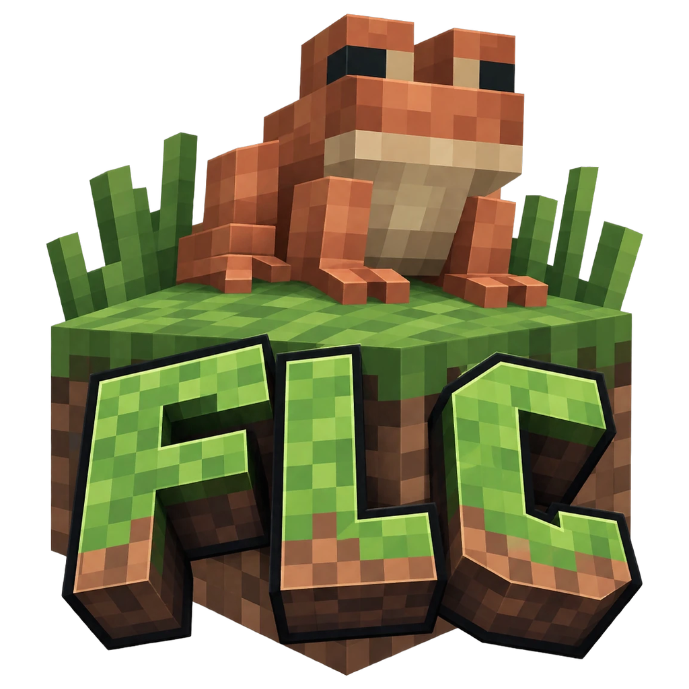
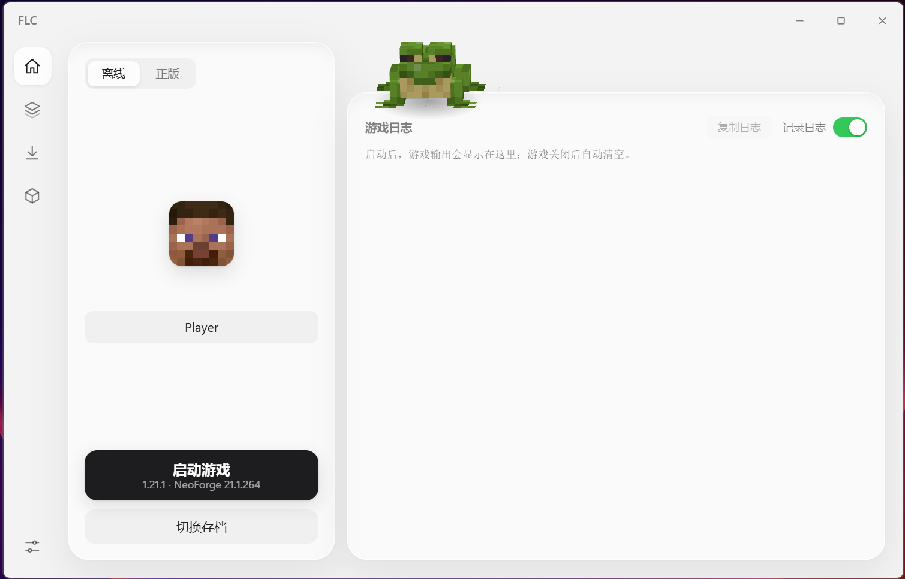

存档，就是一整个游戏
原版和它装的加载器合并成一条存档，不会一个版本显示两行。每个存档都能改名、换图标，有独立的内存、Java、JVM 参数和窗口大小，还能连同世界与模组一键复制。

FLC Frog Light Corev0.1.2 已发布
版本、加载器、模组、账号，收进一个清爽的窗口。安装包只有 4.3 MB，点下启动，剩下的交给它。
Windows 10 / 11 · 免安装版可选 · 开源 GPL-3.0

为什么是 FLC
启动器不该让你先学一遍 Minecraft 目录结构。FLC 的目标很简单：默认就好用，需要时能改。
原版和它装的加载器合并成一条存档，不会一个版本显示两行。每个存档都能改名、换图标，有独立的内存、Java、JVM 参数和窗口大小，还能连同世界与模组一键复制。
模组、整合包、光影、资源包、数据包五类内容都能搜。装模组前先看前置：已安装、将自动安装、找不到适配版本，必需的一键补齐；安装时自己勾选装到哪些存档。
并发下载并校验文件完整性，官方源与 BMCLAPI 镜像自动竞速，失败自动换源。下载队列随时可以取消，右上角能看到正在下什么、接下来下什么。
按版本自动匹配需要的 Java（1.16 以下 Java 8，1.17 用 16，1.18–1.20.4 用 17，1.20.5 之后用 21），缺了就自动下载合适的运行时。
设备码方式登录，不需要内置浏览器，令牌用 Windows 系统加密保存。账号的头像和皮肤直接显示在启动器里。
游戏异常退出后，它会从日志里认出常见原因：内存不足、Java 版本不对、模组冲突、显卡驱动，并用两句话说清楚发生了什么、接下来怎么办。
界面
左侧一条图标导航，中间是内容。首屏永远只有一个“启动游戏”，其余按需出现。
下载
需要 Windows 10 / 11 x64。安装包会负责 WebView2 运行时，免安装版更省事。
中文安装向导，装到当前用户目录，不需要管理员权限。带开始菜单和桌面快捷方式，缺少 WebView2 时会自动下载安装。
下载安装包双击即用，不写注册表。需要系统里已有 WebView2 运行时（Windows 11 自带，Windows 10 可能需要手动安装）。
下载免安装版Windows SmartScreen 可能提示“未知发布者”，点“更多信息 → 仍要运行”即可。请对照 Release 里的 SHA256SUMS.txt 校验下载的文件。
微软要求登录程序使用在 Azure 注册、并通过 Minecraft 服务审核的应用 ID。自己用的话，在“设置 → 账号 → 微软登录 Client ID”里填自己的 ID 即可。
按版本自动匹配：1.16 以下 Java 8，1.17 用 16，1.18–1.20.4 用 17，1.20.5 之后用 21。缺了就直接下载合适的运行时。
常见问题
去“下载游戏”选一个版本，可以顺便选加载器（Fabric、Legacy Fabric、Quilt、Forge、NeoForge），下载完成后回到主页点“启动游戏”。Java 会按版本自动准备。
目前只发布 Windows x64。项目本身是跨平台的，但这一版没有为其他系统做打包和测试。
主页右侧会显示游戏日志。异常退出时 FLC 会尝试从日志里识别原因；也可以点“复制日志”把内容贴到 GitHub Issues 里。
为了用原版方块的模型和贴图渲染存档图标，以及显示默认皮肤和青蛙形象，项目里包含少量从 Minecraft 取出的素材。它们属于 Mojang Studios，不在 GPL 授权范围内，详见仓库里的 NOTICE.md。